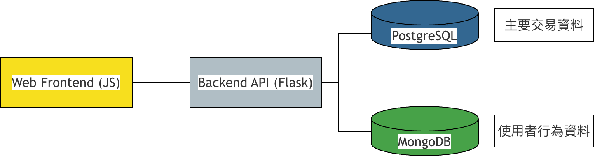
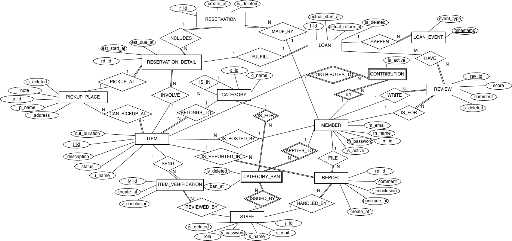

組別：第 19 組

接下來將依序展示：
會員操作流程演示
審核機制與檢舉處理
核心表格：Member, Item, Reservation, Loan, Contribution

{
"session_id": "sess_123",
"user_token": "...",
"events": [
{...},
{
"event_type": "browse_category",
"timestamp": "...",
"endpoint":"/item/category/63",
"category_id": 63,
"success": true,
"error_reason": null
}
],
"funnel_stage": "view_item"
}
# funnel_tracker.py
def log_event(event_type, ...):
db.user_sessions.update_one(
{"session_id": session_id},
{"$push": {"events": event}}
)
針對高頻查詢與複雜邏輯的優化策略
| 應用 | 查詢 | 索引 |
|---|---|---|
| 預約時段衝突檢查 | WHERE i_id = ?AND OVERLAPS ... |
Compound Index(i_id, est_start_at, est_due_at) |
| 分類瀏覽 & 物品檢索 | JOIN ON parent_c_idWHERE c_id = ? |
FK Indexcategory(parent_c_id)item(c_id) |
| 個人評分 (Reviews) | WHERE reviewee_id = ?SELECT score, ... |
Covering IndexINCLUDE (l_id, score, is_deleted) |
設計思維：
我們針對系統中 Loading 最重的「時段重疊檢查」建立了複合索引，這直接提升了併發預約時的鎖定與查詢效率。
優化遞迴查詢
EXPLAIN
WITH RECURSIVE category_tree AS (
SELECT c_id
FROM category
WHERE c_id = :root
UNION ALL
SELECT c.c_id
FROM category c
JOIN category_tree ct
ON c.parent_c_id = ct.c_id
)
SELECT * FROM item ...
idx_category_parent_c_id交易時防止同時預約同一物品的相同時段，以及貢獻度修改時鎖定貢獻度紀錄
# reservation_service.py
db.session.execute(text("
SET TRANSACTION ISOLATION LEVEL SERIALIZABLE"))
# 鎖定貢獻度紀錄 (防止併發修改)
session.execute(text("""
SELECT i_id FROM contribution
WHERE m_id = :m_id
AND is_active = true
-- ... 其他條件 ...
FOR UPDATE OF contribution
"""))
未來可以考慮加入更多功能，例如：